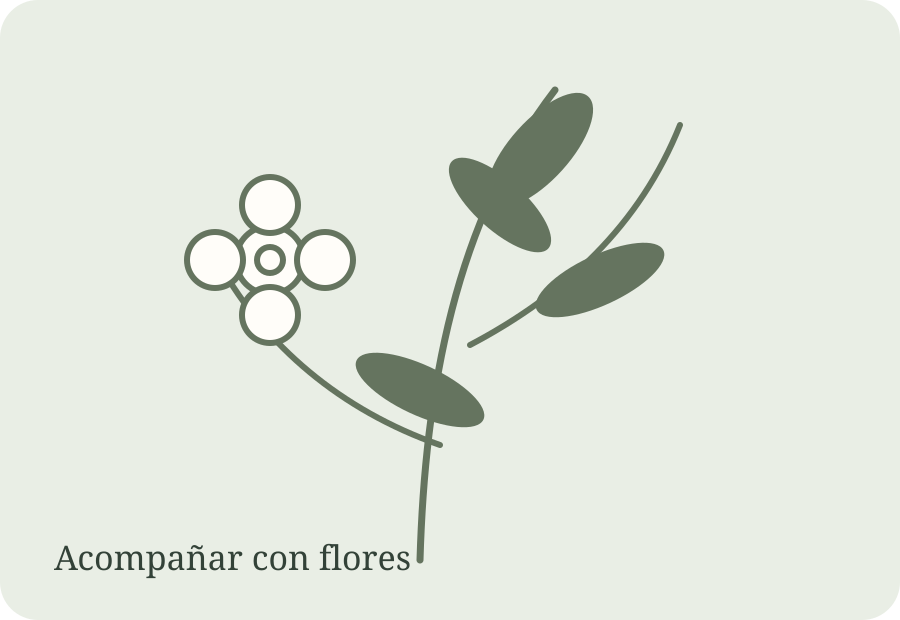
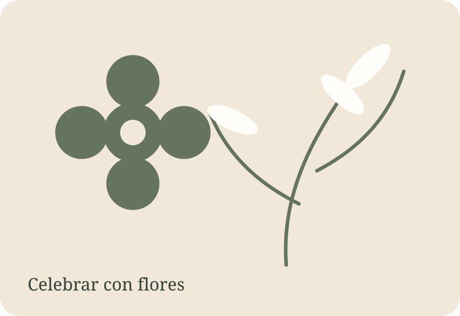
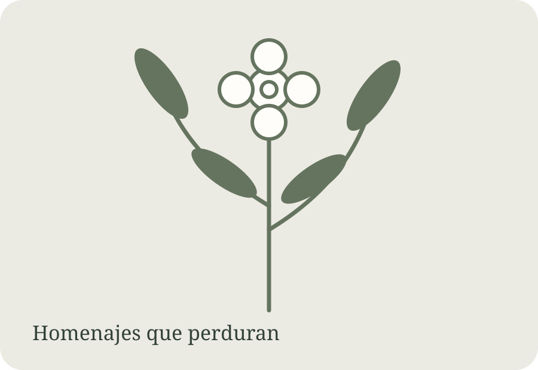
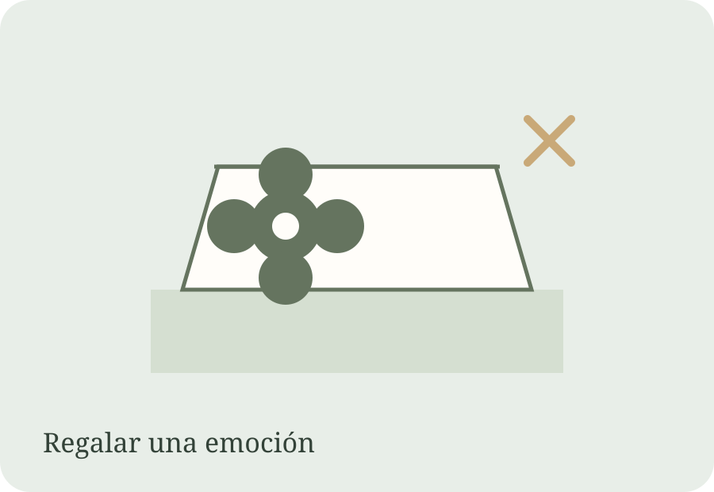

Acompañar
Cuando las flores dicen “estoy acá”.
Homenajes, despedidas, condolencias, ceremonias y flores para recordar y acompañar.
Ver opciones →FLORES QUE EXPRESAN
Hay momentos que se celebran, otros que se acompañan y muchos que simplemente necesitan una forma de decir “estoy acá”.

ELEGÍ TU MOMENTO

Homenajes, despedidas, condolencias, ceremonias y flores para recordar y acompañar.
Ver opciones →Cumpleaños, aniversarios, nacimientos, agradecimientos, regalos, sorpresas y momentos felices.
Ver opciones →CATÁLOGO JULILEN
Esta primera versión muestra propuestas de referencia. Pronto vamos a incorporar las fotos y precios reales de Julilen.
Flores seleccionadas para regalar y celebrar.
Consultar precio
Una forma delicada de homenajear y acompañar.
Consultar precio
Flores y detalles para sorprender.
Consultar precioUna propuesta pensada para ese momento único.
Consultar precioUna expresión floral para recordar y honrar.
Consultar precioUn detalle para hacerle saber a alguien que pensás en él.
Consultar precioFLORES QUE EXPRESAN
Julilen nace en el mundo de las flores y abre su mirada a todos esos momentos en los que queremos expresar algo especial.
Conocé más →PAGO FÁCIL
Transferencia bancaria, tarjetas y efectivo. Te confirmamos el importe y los datos al realizar tu pedido.
JULILEN
Creemos en las flores como una manera de acompañar, celebrar, agradecer, recordar y expresar aquello que a veces las palabras no pueden.
ESTAMOS PARA AYUDARTE
Contanos para quién es, qué momento estás atravesando y qué querés expresar. Te ayudamos a encontrar la opción adecuada.